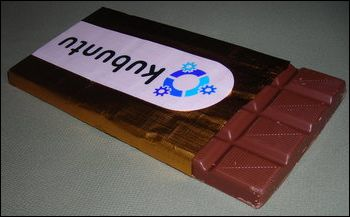

Speed, Beauty and Innovation

Kubuntu 9.04 has it all, and more….
The Kubuntu Team is proud to announce the release of Kubuntu 9.04, the Jaunty Jackalope!
With this release, the development team brings you the best KDE distro out there. With its world-renowned Ubuntu core and the KDE 4.2 desktop, Kubuntu 9.04 gives users a well-rounded, feature-filled and elegant desktop.
On the top, KDE 4.2 brings beauty, innovation and updated software with new & improved features. Underneath, updated kernel and core systems bring stability and speed.
Installing 9.04
Downloading 9.04
To download CD (and DVD) images for Kubuntu, please visit our Downloads page.
You can also order a free CD from Shipit, this will take up to 6 weeks to deliver.
Upgrading from 8.10
Users of 8.10 (Intrepid) will be prompted to upgrade. For more information see the Kubuntu 8.10 upgrade instructions.
Upgrading from 8.04
Users of 8.04 (Hardy) can upgrade through Adept Manager. For more information see the Kubuntu 8.04 upgrade instructions.
NOTE: This will upgrade your system from KDE 3 to KDE 4.
What’s New?
Kubuntu 9.04 includes an upgraded desktop containing many bug fixes, new configuration options, as well as many new and updated applications. Below are some highlights.
KDE 4.2
{kind=link}
9.04 includes KDE 4.2.2, the latest version of their amazing desktop environment. On top of the many bug fixes included, this version also contains many improvements and new features, including:
- Significant refinements of Plasma and KWin, the KDE workspace
- Many new and updated plasma widgets
- New and improved desktop effects (enabled by default)
- The return of the optional “Classic Desktop” motif as an option
- More desktop configuration options
- Improved System Tray
- New, improved notifications
- and more…
For complete details see the KDE 4.2 announcement and the KDE 4.2 Visual Guide.
System Settings
New in System Settings are tools for managing software and printer configuration.

Software management can now be performed from within System Settings with the new Package Kit application.

Printer configuration is also now found in System Settings as well, in the Advanced tab.
Quassel for IRC
Quassel is a new IRC client that is now the default for Kubuntu 9.04. A new setup wizard makes getting started a breeze.

Amarok 2.0.2
Kubuntu 9.04 now comes with the recently-released Amarok 2.0.2, the second bugfix/enhancement release in the Amarok 2 series, which includes integration of online services such as Last.fm, LibriVox, Jamendo, Magnatune and more. Amarok gives you a new way to listen to your music, and we highly recommend that you check it out.

KDE 4 Network-Manager Plasma Widget

The new plasma-widget-network-manager replaces the old KNetworkManager applet.
””’NOTE””’ : ”Upgraders may have to add the Network Management plasma widget to their taskbar or desktop manually”
 |
 |
|
| Click the Plama icon in the bottom right. | Click Add Widget. | Double click on Network Management. |
KTorrent 3.2

KTorrent has been updated to version 3.2. This version brings new features, a heaping of bugfixes and fixes for memory leaks. It also brings a new KTorrent plasmoid to grace your desktop installable as the plasma-widget-ktorrent package.
Digikam 0.10.0

Digikam has been updated to its first KDE 4 release. This version is not a complete port to KDE 4 technologies (Solid, Phonon…), but it includes major functionality improvements:
- Support on multiple root album paths (including basic support for albums on network)
- Geolocation with Marble widget
- XMP support
- New Camera UI with capture support
- Major improvements of Search interface
- Improved image editor with integrated tools
Together with new Digikam, there is also the first KDE 4 release of KIPI Plugins 0.2.0. It provides new import/export plugins for SmugMug, Facebook and 23 web photo services. Digikam is not installed by default, but can be installed later on at your choice.
Qt 4.5
Kubuntu 9.04 ships with latest Qt, version 4.5, which brings a faster desktop experience as well as new features. More information can be found in the Qt what’s new page.
GTK application integration
Kubuntu 9.04 offers improved visual integration of GTK applications into its KDE environment. Using QtCurve 0.62.8, your favourite GTK applications such as Firefox and Pidgin (to name a few) will take on a theme similar to the rest of your KDE applications.
Known Issues
- There are reports of the open source ATI drivers being very slow. Be sure to not have Virtual size set to high and try with XAA instead of EXA; fixes it in some cases.
- Nvidia 64 computer chipsets still cannot boot kernel without pci=nomsi option
- Qt shows repaint bugs with some but not all Intel Gfx Chips. Using XXA or UXA fixes them in some cases, but hurts performance, please report UXA on this thread. Bug 338669.
- Qt repaint bugs also seen in some situations using the open source ati driver; XAA fixes this in some cases. Bug 350120
- Connection to non-broadcasting (hidden SSID) wireless networks with the network-manager widget isn’t possible Bug 330811
- Network Manager does not connect to some networks Bug 339313
- Network Manager is not added to the panel on upgrades Bug 349066
- KPackageKit (which is now the default package manager for Kubuntu Jaunty) doesn’t support installations which require a removal or updates which require additional software. The packages to be removed / installed will be shown as blocked. Bug 342671
- Kmail sieve functionality is buggy and causes CPU hang. You shouldn’t use it at the moment.
More issues are listed on the Ubuntu Release Notes.
Kubuntu Ports
Kubuntu 9.04 is now available for the lpia, and powerpc architectures, including the Sony PLAYSTATION 3. For those unfamilar with ports, the powerpc port is designed for Apple Macintosh G3, G4, and G5 computers, including iBooks and PowerBooks as well as IBM OpenPower machines while lpia is designed for devices using the Low-Power Intel Architecture, including the A1xx and Atom processors.
Live images are available for powerpc, and alternate images are available for powerpc, powerpc+ps3, and lpia.
Please note the SPARC, IA-64, and HPPA images are known to be broken, and are completely unsupported. We hope to add support for these architectures in future Kubuntu releases, if your interested in assisting, please contact Michael Casadevall (NCommander) in #kubuntu-devel on irc.ubuntu.com
The installation manual for powerpc: power pc installation
The i386 installation manual applies for lpia: lpia installation
These images are available at: Kubuntu ports images
In addition to the normal Kubuntu channels, three additional channels are available for port users support:
#ubuntu-ports – For general ports discussion and support
#ubuntu-powerpc – For {X|K}ubuntu powerpc discussion and support
#ubuntu-ps3 – For Playstation 3 discussion and support
Known Ports Issues
- On some PowerBooks with NVIDIA cards, usplash does not display while starting from CD. It remains at a blank screen for 1-2 minutes then starts up. Everything works, it simply takes time to startup
- On some PowerBooks with NVIDIA cards, usplash colors appear inverted. This is comestic and harmless.
- PlayStation 3 requires the alternate PS3 image to successfully install.
– Please note that the PS3 barely meets the minimal requirements for Kubuntu - On all port architectures, including lpia, there is no linux-restricted-modules package which means hardware that requires closed source blobs are non-functional.
Ports Support
All non-i386/amd64 ports of Kubuntu are community supported, and are not eligible for support from Canonical. Please note that while these architectures are community supported, normal updates available via jaunty-updates and jaunty-security are generally available. Backports and jaunty-proposed are also available.
Feedback
We want to hear what you think about Kubuntu 9.04, the Jaunty Jackalope. We want to know if it Rocks, if it is just OK, or if it is flat out wrong. No matter the feedback, as long as it is in line with the Ubuntu Code of Conduct, we would like to hear it.
So what are you waiting for? Head on over to the Feedback Page and let us know!